Cell 68 px · body 36 px · head 42 px · terminal 68 px. Exact masks unchanged. One generated common material sheet used solely as a reference; all production pixels painted independently within locked masks.
V5.2 → V5.3, always 1 image pixel = 1 CSS pixel at browser zoom 100%. Horizontal scroll is intentional. No shrink-to-fit; compare at native scale.
Technical QA passed. Visual acceptance remains a human review gate. This is not a newly approved direction or gameplay integration.
Browser connector / console evidence · Report · Unified material reference, NOT source asset · ImageGen prompt (1 operation) · Existing isolated DEV renderer
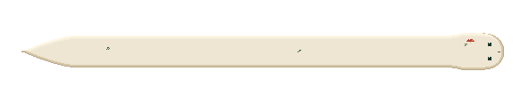
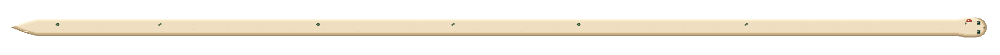
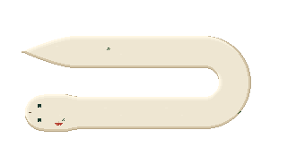
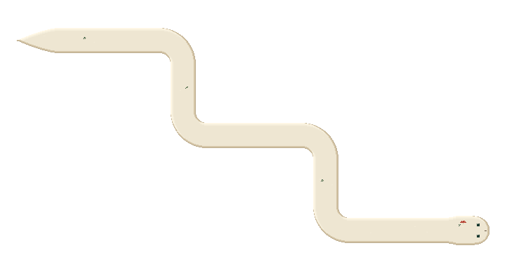
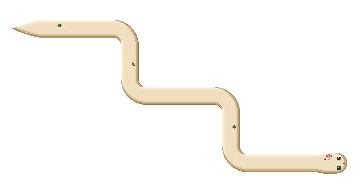
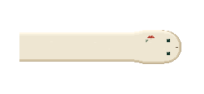
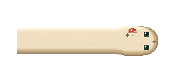
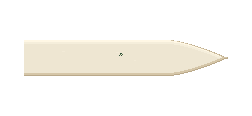
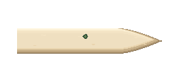
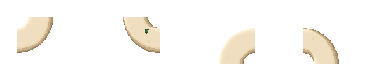
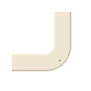
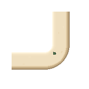
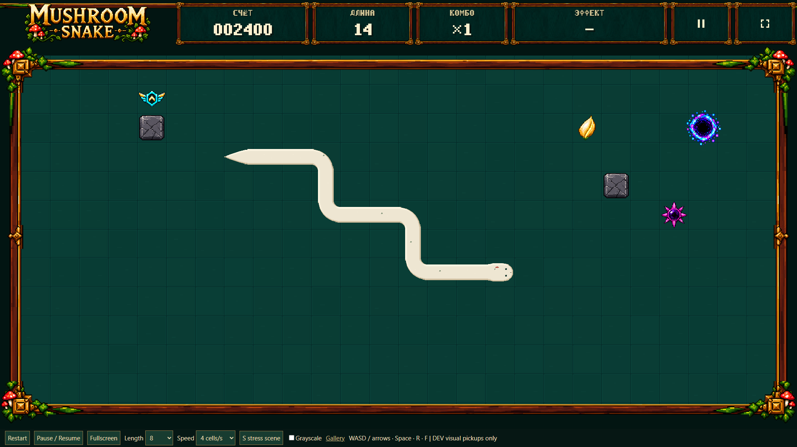
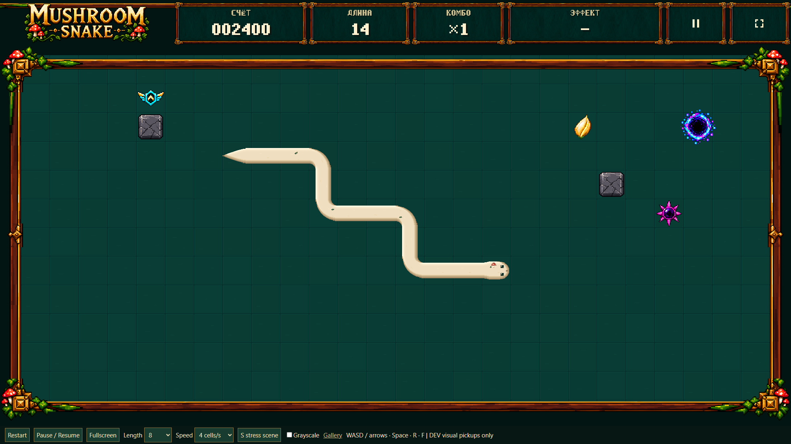
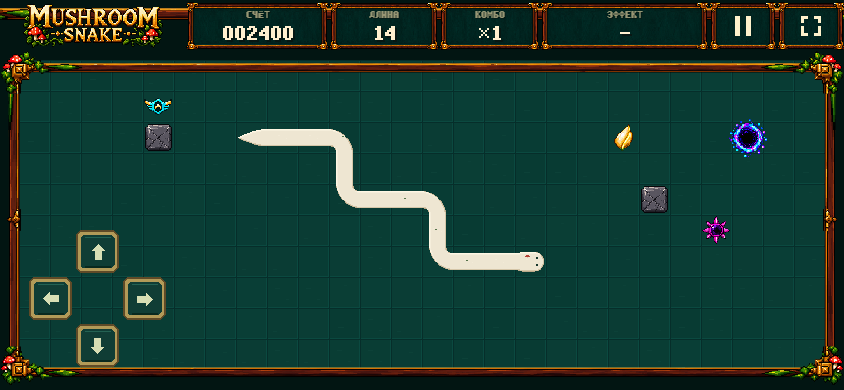
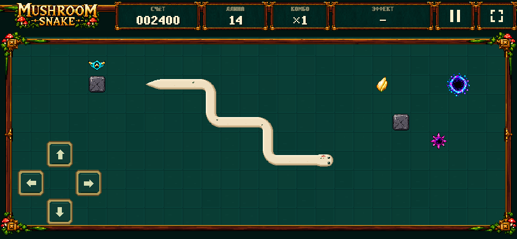
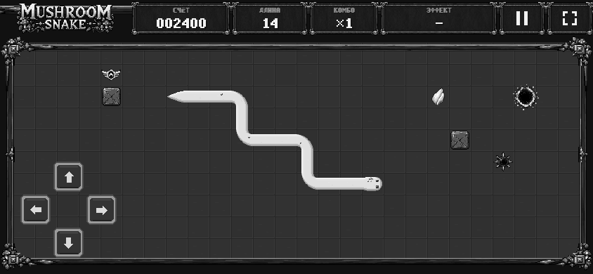